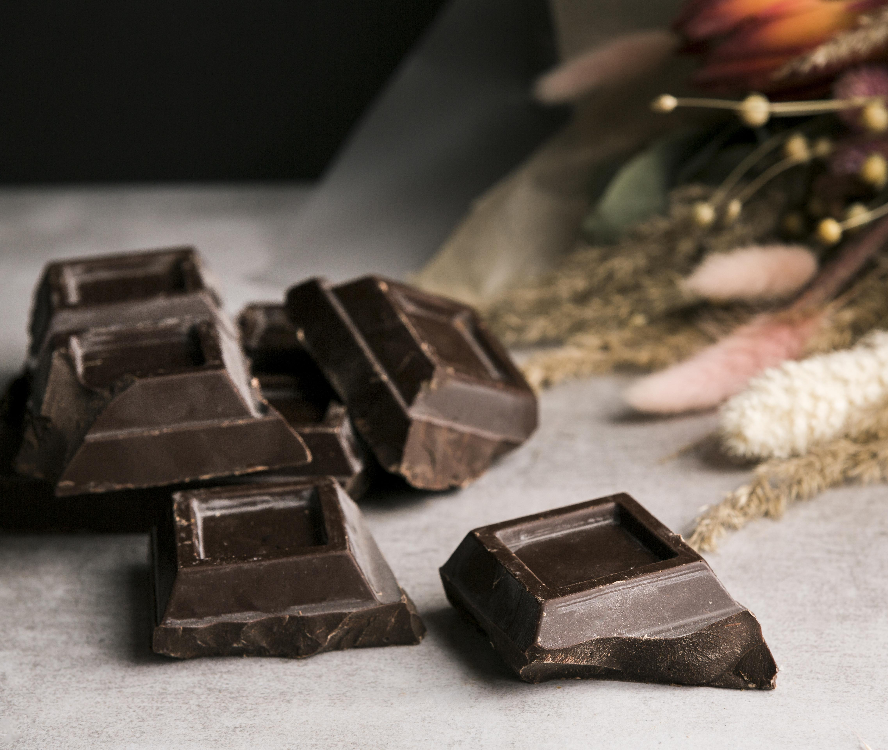

Çikolatalı Çilekli Mousse Tarifi
Malzemeler :
- 200 gr bitter çikolata

- 3 adet yumurta

- 2 yemek kaşığı şeker

- 1 su bardağı krema

- 1 çay kaşığı vanilya özütü

- 3 adet çilek

Yapılışı :
- Bitter çikolatayı benmari usulü eritin ve soğumaya bırakın.
-
Yumurtaların sarılarını ve beyazlarını ayırın. Yumurta sarılarını
şekerle çırpın.
-
Çırpılmış yumurta sarılarına erimiş çikolatayı ekleyip karıştırın.
- Ayrı bir kapta kremayı çırpın ve çikolatalı karışıma ekleyin.
-
Yumurta beyazlarını vanilya özütü ile çırpıp karışıma ekleyin, nazikçe
karıştırın. Karışımı kaplara döküp buzdolabında 2-3 saat soğutun.
Tatlımız hazır :

Anasayfa